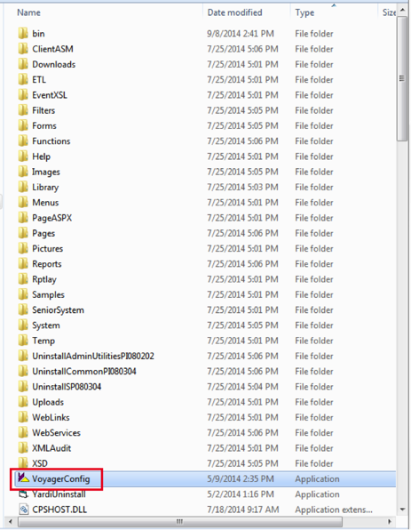
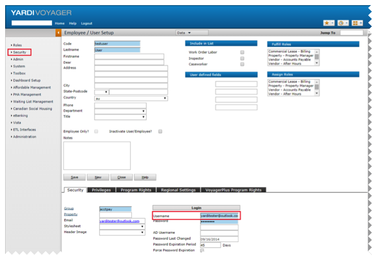

The root folder of the Voyager application that is installed on the Voyager web server is shown below.

Login Version
SSOSSOType
SAML2IP ID
Sign into the Okta Admin dashboard to generate this value.IP Sign Auth Req
<unchecked>IP Sign Thumb
Sign into the Okta Admin dashboard to generate this value.IP LoginUrl
Sign into the Okta Admin dashboard to generate this value.SP ID
<yourBaseURL>/trustSubstitute your base Voyager URL for <yourBaseURL>.
SP Assertion Url
<yourBaseURL>/pages/LoginSSO.aspxSubstitute your base Voyager URL for <yourBaseURL>.
Issuer Cert Revocation Mode
OnlineIssuer Certif Validation Mode
noneClaim Type Name
usernameVerify that the Username values in Yardi Voyager, shown below, match the usernames in Okta on the People tab for the Yardi Voyager application.

Done!
Note: SP-initiated SSO is support. IdP-iniated SSO and Just In Time (JIT) provisioning are not supported.